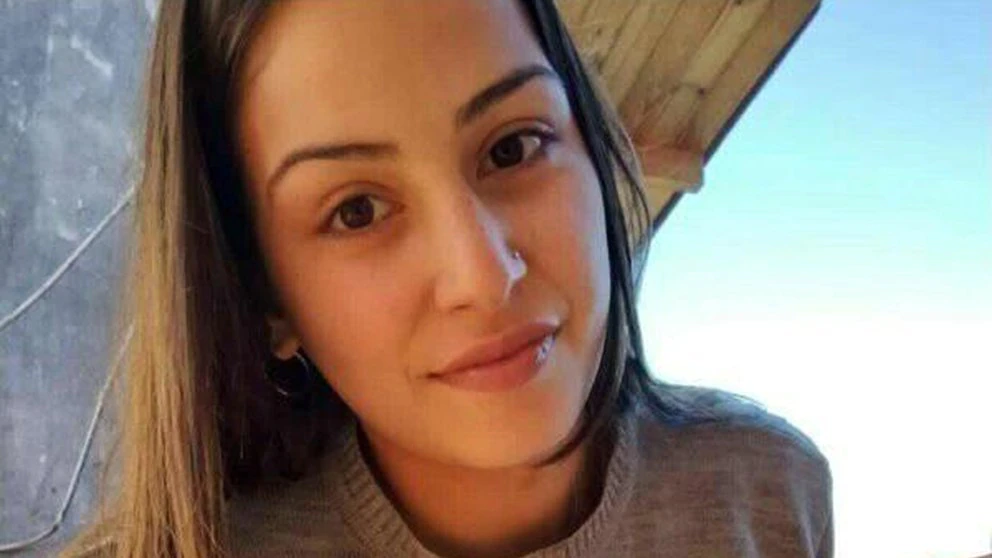
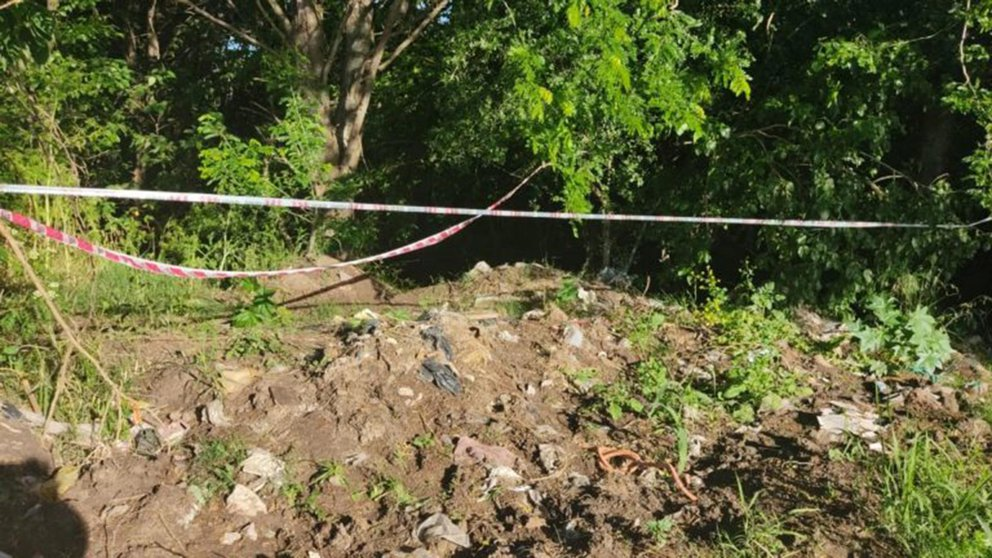
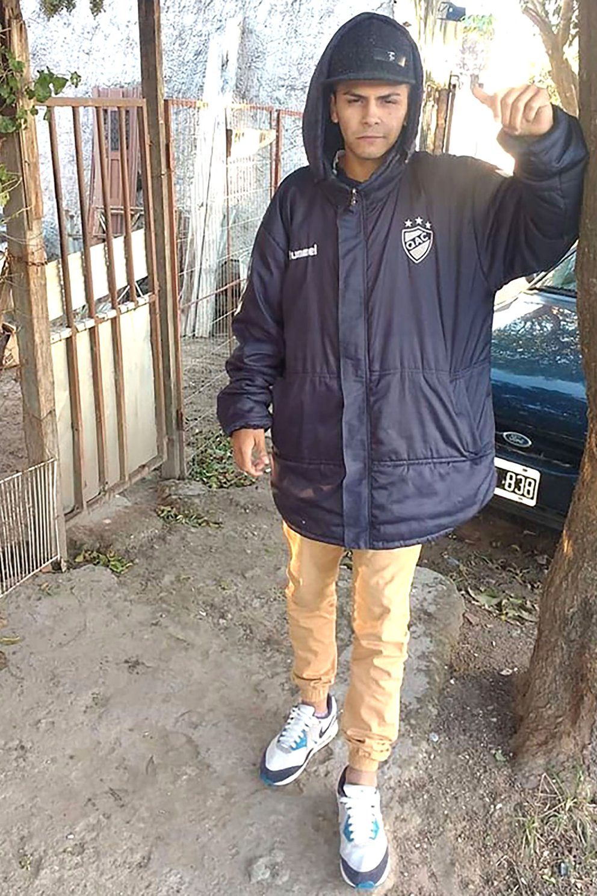

Brutal femicidio de una joven de 19 años en Berazategui: dejaron su cadáver en un descampado
Iván Morales, un joven de 23 años de Berazategui, está detenido, acusado de abusar y matar a la joven de 19 años que había conocido en una fiesta el viernes. Se espera que comience su indagatoria
Por Pilar Safatle
15 de Noviembre de 2021
psafatle@infobae.com

El cuerpo de Brisa Formoso, de 19 años, fue encontrado este sábado en un descampado
Los padres, las amigas y los vecinos de Brisa Abril Formoso Sobrado la buscaron intensamente por más de 24 horas. Todo lo que sabían era que el viernes a la noche había ido a una fiesta con su prima, que en ese evento había discutido con su ex y que había conversado y bailado con otro chico. El domingo a la mañana se confirmó lo peor: alguien había matado a la joven madre de 19 años y dejó el cadáver entre los pastos crecidos de un descampado en la localidad bonaerense de Ranelagh. La autopsia, según confirmaron a Infobae fuentes judiciales cercanas al expediente, reveló que Brisa, antes de su muerte, fue víctima de un calvario bestial.
El lugar donde se encontró el cuerpo.
Su atacante -hasta el momento uno sólo, a pesar de que se aguardan pericias sobre su ropa y cuerpo en búsqueda de otros perfiles genéticos- la atacó en algún momento entre las 5 y las 8 de la mañana del sábado y la torturó. Los forenses encontraron heridas correspondientes con un abuso sexual violento y hematomas en el cuerpo, con uno de gran tamaño en la boca, signos inequívocos de una golpiza. Luego, el asesino la estranguló con su propio pantalón de jean. El principal sospechoso y único detenido por el crimen hasta el momento es Hugo Iván Morales, un joven de 23 años con domicilio en la localidad cercana de Plátanos, que Brisa conoció la noche previa a su muerte en una fiesta en la sociedad de fomento San Marcos sobre la calle 142 y 56 de la localidad de Guillermo Hudson. Varias personas los vieron juntos en el lugar y algunos videos de la fiesta los muestran mientras conversan y bailan.
Efectivos de la Comisaría 4ta de Berazategui lo detuvieron este domingo por la tarde: estaba lleno de rasguños en el cuerpo y la cara. Morales, registrado en la AFIP en el rubro de la construcción e hincha fanático del Quilmes Atlético Club, no tiene antecedentes conocidos de violencia pero sí registra varios ingresos en comisarías bonaerenses por delitos menores y robos, según confirmó a este medio una fuente con acceso al expediente. Este lunes por la tarde será indagado por el fiscal Daniel Ichazo, de la UFI N° 1 de Berazategui, que se encuentra a cargo del caso. 
La familia de Brisa había denunciado su desaparición el sábado a la mañana. Fue su propia madre la que se presentó en la Comisaría 4ta de Berazategui e indicó que su hija -madre de un nene de nueve meses- no había regresado de la fiesta a la que había asistido junto a su prima y una amiga.
La prima de la desaparecida les explicó a los efectivos que la joven se había cruzado en la fiesta con su ex pareja, con quien mantuvo una fuerte discusión luego de que él la viera junto a otro chico, que resultó ser Iván Morales, el detenido.
Cerca de las 5, Brisa junto a su amiga, su prima y el detenido estuvieron tomando algo en una plaza. “Perdieron la noción del tiempo”, explica un investigador. Entonces Brisa se fue junto a Iván, que iba a acompañarla a su casa y las otras dos chicas se fueron para el otro lado.
El informe médico que da cuenta de las heridas de Iván Morales cuando fue detenido: tenía rasguños en el cuerpo y la cara
La búsqueda de la joven -que vestía un jean celeste, una campera de tela color negro con rayas blancas tipo Adidas y zapatillas de tela negras- se dificultaba porque no tenía teléfono celular y era la primera vez que se ausentaba de su casa sin aviso.
Aunque en un primer momento las sospechas apuntaron a su ex novio, no había evidencias de su participación en el crimen y testigos confirmaron que se había retirado antes que Brisa de la fiesta.
Aproximadamente 24 horas más tarde, dos personas vieron el cadáver en el descampado a 15 cuadras donde fue vista por última vez la víctima y dieron aviso a la Policía.
Al momento en que la familia Formoso se acercó a reconocer el cuerpo, se produjeron empujones y corridas entre vecinos y conocidos de la víctima, que denunciaban la “inacción” de la policía y que compartieron en redes sociales el momento en que el personal de Infantería de la Provincia, que custodiaba el lugar, disparó balas de goma hacia los familiares.
En las últimas horas, amigos y parientes de la joven despidieron a Brisa a través de las redes sociales y reclamaron justicia por el femicidio. “Nunca voy a aceptar que hayas perdido la vida, porque no la perdiste, te la arrancaron. No dejo de pensar en vos y no te voy a olvidar nunca. Nunca voy a dejar de llorarte. Nunca se van a acabar estos días de luto. Le pido a Dios que me ayude a entender por qué te paso a vos”, escribió una de sus amigas. “Quiero que sepan que sos y fuiste una excelente mama, hija y amiga, que agradezco mucho cuando estuviste en el momento en que más hecho mierda estuve y que me dejaste ser parte de la vida de tu bebé como su tío postizo”, posteó otro amigo.
“¿Qué pasa loco? ¿No podemos salir una noche a divertirnos? ¿A salir de nuestra rutina de madres? ¿Por qué tenemos que salir con miedo? Dejaron una familia destrozada y un bebé sin su madre”, publicó además otra amiga de la joven.